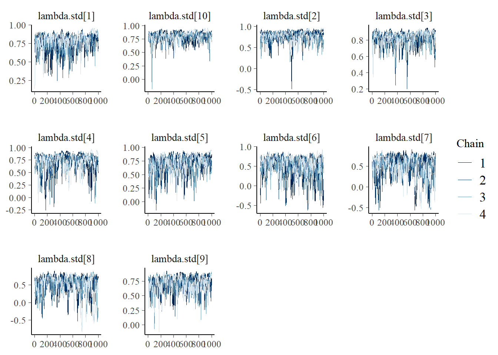

Extroversion Data Analysis
Sensitivity Analysis
R. Noah Padgett
2023-05-12
Last updated: 2023-05-12
Checks: 5 2
Knit directory: EJP-Special-Issue/
This reproducible R Markdown analysis was created with workflowr (version 1.7.0). The Checks tab describes the reproducibility checks that were applied when the results were created. The Past versions tab lists the development history.
The R Markdown file has unstaged changes. To know which version of
the R Markdown file created these results, you’ll want to first commit
it to the Git repo. If you’re still working on the analysis, you can
ignore this warning. When you’re finished, you can run
wflow_publish to commit the R Markdown file and build the
HTML.
Great job! The global environment was empty. Objects defined in the global environment can affect the analysis in your R Markdown file in unknown ways. For reproduciblity it’s best to always run the code in an empty environment.
The command set.seed(20220808) was run prior to running
the code in the R Markdown file. Setting a seed ensures that any results
that rely on randomness, e.g. subsampling or permutations, are
reproducible.
Great job! Recording the operating system, R version, and package versions is critical for reproducibility.
- model6
To ensure reproducibility of the results, delete the cache directory
sensitivity_analysis_cache and re-run the analysis. To have
workflowr automatically delete the cache directory prior to building the
file, set delete_cache = TRUE when running
wflow_build() or wflow_publish().
Great job! Using relative paths to the files within your workflowr project makes it easier to run your code on other machines.
Great! You are using Git for version control. Tracking code development and connecting the code version to the results is critical for reproducibility.
The results in this page were generated with repository version 5255671. See the Past versions tab to see a history of the changes made to the R Markdown and HTML files.
Note that you need to be careful to ensure that all relevant files for
the analysis have been committed to Git prior to generating the results
(you can use wflow_publish or
wflow_git_commit). workflowr only checks the R Markdown
file, but you know if there are other scripts or data files that it
depends on. Below is the status of the Git repository when the results
were generated:
Ignored files:
Ignored: .Rhistory
Ignored: .Rproj.user/
Ignored: analysis/model1_results_cache/
Ignored: analysis/model2_results_cache/
Ignored: analysis/model3_results_cache/
Ignored: analysis/model4_results_cache/
Ignored: analysis/sensitivity_analysis_cache/
Ignored: data/extracted_maximal_m1.csv
Ignored: data/extracted_maximal_m2.csv
Ignored: data/extracted_maximal_m3.csv
Ignored: data/extracted_maximal_m4.csv
Ignored: data/extracted_omega_m1.csv
Ignored: data/extracted_omega_m2.csv
Ignored: data/extracted_omega_m3.csv
Ignored: data/extracted_omega_m4.csv
Ignored: data/posterior_draws_m1.csv
Ignored: data/posterior_draws_m2.csv
Ignored: data/posterior_draws_m3.csv
Ignored: data/posterior_draws_m4.csv
Untracked files:
Untracked: fig/posterior_sensitity_omega_cauchy.pdf
Untracked: fig/posterior_sensitity_omega_cauchy.png
Unstaged changes:
Modified: analysis/sensitivity_analysis.Rmd
Modified: fig/posterior_sensitity_omega_uniform.pdf
Modified: fig/posterior_sensitity_omega_uniform.png
Note that any generated files, e.g. HTML, png, CSS, etc., are not included in this status report because it is ok for generated content to have uncommitted changes.
These are the previous versions of the repository in which changes were
made to the R Markdown (analysis/sensitivity_analysis.Rmd)
and HTML (docs/sensitivity_analysis.html) files. If you’ve
configured a remote Git repository (see ?wflow_git_remote),
click on the hyperlinks in the table below to view the files as they
were in that past version.
| File | Version | Author | Date | Message |
|---|---|---|---|---|
| Rmd | 659e4bd | noah-padgett | 2023-02-08 | updated site with results |
# Load packages & utility functions
source("code/load_packages.R")
source("code/load_utility_functions.R")
# environment options
options(scipen = 999, digits=3)# Load diffIRT package with data
library(diffIRT)
data("extraversion")
mydata <- na.omit(extraversion)Half-Cauchy Hyper-prior for \(\lambda\)
cat(read_file(paste0(w.d, "/code/JAGS/model_4_halfcauchy.txt")))model {
### Model
for(p in 1:N){
for(i in 1:nit){
# data model
y[p,i] ~ dbern(omega[p,i,2])
# LRV
ystar[p,i] ~ dnorm(lambda[i]*eta[p], 1)
# Pr(nu = 2)
pi[p,i,2] = phi(ystar[p,i] - tau[i,1])
# Pr(nu = 1)
pi[p,i,1] = 1 - phi(ystar[p,i] - tau[i,1])
# log-RT model
dev[p,i]<-lambda[i]*(eta[p] - tau[i,1])
mu.lrt[p,i] <- icept[i] - speed[p] - rho * abs(dev[p,i])
lrt[p,i] ~ dnorm(mu.lrt[p,i], prec[i])
# MISCLASSIFICATION MODEL
for(c in 1:ncat){
# generate informative prior for misclassificaiton
# parameters based on RT
for(ct in 1:ncat){
alpha[p,i,ct,c] <- ifelse(c == ct,
ilogit(lrt[p,i]),
(1/(ncat-1))*(1-ilogit(lrt[p,i]))
)
}
# sample misclassification parameters using the informative priors
gamma[p,i,c,1:ncat] ~ ddirch(alpha[p,i,c,1:ncat])
# observed category prob (Pr(y=c))
omega[p,i, c] = gamma[p,i,c,1]*pi[p,i,1] +
gamma[p,i,c,2]*pi[p,i,2]
}
}
}
### Priors
# person parameters
for(p in 1:N){
eta[p] ~ dnorm(0, 1) # latent ability
speed[p]~dnorm(sigma.ts*eta[p],prec.s) # latent speed
}
sigma.ts ~ dnorm(0, 0.1)
prec.s ~ dgamma(.1,.1)
# transformations
sigma.t = pow(prec.s, -1) + pow(sigma.ts, 2) # speed variance
cor.ts = sigma.ts/(pow(sigma.t,0.5)) # LV correlation
for(i in 1:nit){
# lrt parameters
icept[i]~dnorm(0,.1)
prec[i]~dgamma(.1,.1)
# Thresholds
tau[i, 1] ~ dnorm(0.0,0.25)
# loadings
lambda[i] ~ dnorm(1, lambdatau)
# LRV total variance
# total variance = residual variance + fact. Var.
theta[i] = 1 + pow(lambda[i],2)
# standardized loading
lambda.std[i] = lambda[i]/pow(theta[i],0.5)
}
rho~dnorm(0,.1)I(0,)
#lambdatau ~ dunif(1, 10)
lambdatau ~ dt(0, 1, 4)I(0,)
invlambdatau = 1/lambdatau
# compute reliability estimates
lambda_sum[1] = lambda[1]
maximal_sum[1] = pow(lambda[1],2)
for(i in 2:nit){
#lambda_sum (sum factor loadings)
lambda_sum[i] = lambda_sum[i-1]+lambda[i]
maximal_sum[i] = maximal_sum[i-1] + pow(lambda[i],2)
}
reli.omega = (pow(lambda_sum[nit],2))/(pow(lambda_sum[nit],2)+nit)
reli.maximal = maximal_sum[nit]/(1+maximal_sum[nit])
}Model results
# Save parameters
jags.params <- c("tau",
"lambda", "lambda.std", "lambdatau", "invlambdatau",
"theta",
"icept",
"prec",
"prec.s",
"sigma.ts",
"rho",
"reli.omega", "reli.maximal")
# initial-values
jags.inits <- function(){
list(
"tau"=matrix(c(-0.64, -0.09, -1.05, -1.42, -0.11, -1.29, -1.59, -1.81, -0.93, -1.11), ncol=1, nrow=10),
"lambda"=rep(0.7,10),
"eta"=rnorm(142),
"speed"=rnorm(142),
"ystar"=matrix(c(0.7*rep(rnorm(142),10)), ncol=10),
"rho"=0.1,
"icept"=rep(0, 10),
"prec.s"=10,
"prec"=rep(4, 10),
"sigma.ts"=0.1
)
}
jags.data <- list(
y = mydata[,1:10],
lrt = mydata[,11:20],
N = nrow(mydata),
nit = 10,
ncat = 2
)
# Run model
model.fit <- R2jags::jags(
model = paste0(w.d, "/code/JAGS/model_4_uniform.txt"),
parameters.to.save = jags.params,
inits = jags.inits,
data = jags.data,
n.chains = 4,
n.burnin = 5000,
n.iter = 10000
)module glm loadedCompiling model graph
Resolving undeclared variables
Allocating nodes
Graph information:
Observed stochastic nodes: 2840
Unobserved stochastic nodes: 4588
Total graph size: 43551
Initializing modelprint(model.fit, width=1000)Inference for Bugs model at "C:/Users/noahp/Documents/GitHub/EJP-Special-Issue/code/JAGS/model_4_uniform.txt", fit using jags,
4 chains, each with 10000 iterations (first 5000 discarded), n.thin = 5
n.sims = 4000 iterations saved
mu.vect sd.vect 2.5% 25% 50% 75% 97.5% Rhat n.eff
icept[1] 1.683 0.130 1.460 1.591 1.674 1.764 1.958 1.00 1600
icept[2] 1.458 0.081 1.320 1.404 1.452 1.504 1.645 1.03 130
icept[3] 1.507 0.226 1.155 1.347 1.480 1.634 2.009 1.02 190
icept[4] 1.343 0.274 0.997 1.153 1.291 1.467 1.993 1.04 90
icept[5] 1.398 0.091 1.249 1.338 1.388 1.447 1.607 1.02 140
icept[6] 1.487 0.188 1.224 1.354 1.448 1.582 1.939 1.01 400
icept[7] 1.374 0.169 1.127 1.245 1.345 1.474 1.766 1.01 200
icept[8] 1.338 0.222 1.048 1.177 1.292 1.451 1.897 1.01 290
icept[9] 1.948 0.162 1.709 1.837 1.923 2.029 2.333 1.03 100
icept[10] 1.349 0.200 1.020 1.205 1.333 1.472 1.811 1.03 76
invlambdatau 0.349 0.274 0.170 0.201 0.257 0.379 1.098 1.05 93
lambda[1] 1.328 0.430 0.600 1.042 1.295 1.566 2.314 1.02 120
lambda[2] 1.387 0.482 0.521 1.067 1.349 1.666 2.482 1.03 140
lambda[3] 1.599 0.422 0.826 1.314 1.577 1.852 2.566 1.03 97
lambda[4] 1.212 0.481 0.301 0.891 1.216 1.517 2.209 1.01 810
lambda[5] 1.130 0.447 0.323 0.827 1.114 1.396 2.096 1.04 120
lambda[6] 0.663 0.394 -0.176 0.415 0.677 0.927 1.401 1.02 150
lambda[7] 0.669 0.391 -0.208 0.438 0.682 0.923 1.400 1.02 180
lambda[8] 0.675 0.409 -0.247 0.438 0.693 0.947 1.409 1.02 260
lambda[9] 1.089 0.362 0.411 0.837 1.079 1.321 1.844 1.01 280
lambda[10] 1.448 0.398 0.756 1.185 1.421 1.676 2.326 1.02 260
lambda.std[1] 0.771 0.103 0.515 0.721 0.792 0.843 0.918 1.01 200
lambda.std[2] 0.777 0.122 0.462 0.730 0.803 0.857 0.928 1.01 260
lambda.std[3] 0.829 0.076 0.637 0.796 0.845 0.880 0.932 1.08 100
lambda.std[4] 0.726 0.161 0.288 0.665 0.772 0.835 0.911 1.00 1600
lambda.std[5] 0.707 0.153 0.308 0.637 0.744 0.813 0.903 1.01 300
lambda.std[6] 0.500 0.249 -0.173 0.383 0.561 0.680 0.814 1.02 200
lambda.std[7] 0.505 0.250 -0.204 0.401 0.564 0.678 0.814 1.03 150
lambda.std[8] 0.507 0.261 -0.240 0.401 0.570 0.687 0.816 1.03 220
lambda.std[9] 0.706 0.127 0.380 0.642 0.733 0.797 0.879 1.01 240
lambda.std[10] 0.802 0.086 0.603 0.764 0.818 0.859 0.919 1.02 390
lambdatau 3.737 1.441 0.911 2.641 3.896 4.965 5.888 1.05 93
prec[1] 1.777 0.222 1.366 1.626 1.763 1.920 2.258 1.00 3300
prec[2] 3.536 0.464 2.713 3.217 3.509 3.826 4.546 1.00 1300
prec[3] 4.232 0.586 3.179 3.833 4.198 4.592 5.495 1.00 3800
prec[4] 2.519 0.331 1.925 2.289 2.499 2.728 3.232 1.00 1600
prec[5] 2.873 0.371 2.217 2.620 2.852 3.104 3.662 1.00 4000
prec[6] 3.013 0.382 2.323 2.747 2.993 3.259 3.841 1.00 3200
prec[7] 4.955 0.670 3.749 4.492 4.912 5.396 6.332 1.00 4000
prec[8] 3.901 0.506 2.976 3.553 3.875 4.227 4.951 1.00 1600
prec[9] 2.570 0.326 1.989 2.338 2.554 2.776 3.250 1.00 4000
prec[10] 6.638 0.981 4.887 5.933 6.578 7.276 8.736 1.00 550
prec.s 11.198 2.393 7.621 9.569 10.853 12.480 16.716 1.01 180
reli.maximal 0.935 0.015 0.903 0.926 0.936 0.945 0.964 1.04 70
reli.omega 0.923 0.019 0.881 0.913 0.925 0.936 0.955 1.03 91
rho 0.087 0.042 0.014 0.058 0.087 0.113 0.177 1.06 68
sigma.ts 0.085 0.065 -0.045 0.044 0.084 0.127 0.209 1.04 87
tau[1,1] -1.569 0.416 -2.499 -1.828 -1.535 -1.278 -0.841 1.03 93
tau[2,1] -0.099 0.327 -0.717 -0.316 -0.107 0.108 0.575 1.01 400
tau[3,1] -2.802 0.620 -4.206 -3.167 -2.719 -2.351 -1.806 1.01 1100
tau[4,1] -3.011 0.693 -4.570 -3.400 -2.935 -2.523 -1.902 1.05 66
tau[5,1] -0.395 0.357 -1.109 -0.632 -0.378 -0.153 0.258 1.01 340
tau[6,1] -3.769 0.958 -6.012 -4.316 -3.625 -3.077 -2.282 1.11 28
tau[7,1] -3.743 0.875 -5.810 -4.223 -3.641 -3.126 -2.369 1.05 60
tau[8,1] -4.140 0.900 -6.174 -4.677 -4.031 -3.508 -2.674 1.00 1900
tau[9,1] -2.183 0.450 -3.195 -2.457 -2.153 -1.859 -1.419 1.01 380
tau[10,1] -2.937 0.585 -4.179 -3.302 -2.903 -2.522 -1.914 1.02 170
theta[1] 2.948 1.335 1.360 2.085 2.678 3.453 6.356 1.03 94
theta[2] 3.157 1.495 1.273 2.138 2.820 3.777 7.158 1.02 140
theta[3] 3.736 1.444 1.682 2.726 3.488 4.429 7.585 1.03 100
theta[4] 2.701 1.292 1.090 1.793 2.478 3.303 5.881 1.00 1000
theta[5] 2.478 1.151 1.104 1.684 2.242 2.948 5.393 1.03 120
theta[6] 1.595 0.555 1.004 1.182 1.460 1.859 2.963 1.03 150
theta[7] 1.601 0.536 1.006 1.199 1.466 1.852 2.959 1.01 180
theta[8] 1.624 0.546 1.005 1.208 1.486 1.903 2.988 1.00 560
theta[9] 2.318 0.838 1.169 1.701 2.164 2.744 4.401 1.01 290
theta[10] 3.255 1.261 1.571 2.405 3.020 3.808 6.410 1.01 310
deviance 3249.258 44.974 3162.605 3218.544 3249.988 3277.769 3338.855 1.01 240
For each parameter, n.eff is a crude measure of effective sample size,
and Rhat is the potential scale reduction factor (at convergence, Rhat=1).
DIC info (using the rule, pD = var(deviance)/2)
pD = 999.6 and DIC = 4248.8
DIC is an estimate of expected predictive error (lower deviance is better).Posterior Distribution Summary
jags.mcmc <- as.mcmc(model.fit)
a <- colnames(as.data.frame(jags.mcmc[[1]]))
fit.mcmc <- data.frame(as.matrix(jags.mcmc, chains = T, iters = T))
colnames(fit.mcmc) <- c("chain", "iter", a)
fit.mcmc.ggs <- ggmcmc::ggs(jags.mcmc) # for GRB plotFactor Loadings (\(\lambda\))
bayesplot::mcmc_areas(fit.mcmc, regex_pars = "lambda", prob = 0.8)bayesplot::mcmc_acf(fit.mcmc, regex_pars = "lambda")bayesplot::mcmc_trace(fit.mcmc, regex_pars = "lambda")ggmcmc::ggs_grb(fit.mcmc.ggs, family = "lambda")bayesplot::mcmc_areas(fit.mcmc, regex_pars = "lambda.std", prob = 0.8)bayesplot::mcmc_acf(fit.mcmc, regex_pars = "lambda.std")bayesplot::mcmc_trace(fit.mcmc, regex_pars = "lambda.std")
ggmcmc::ggs_grb(fit.mcmc.ggs, family = "lambda.std")Factor Reliability Omega (\(\omega\))
bayesplot::mcmc_areas(fit.mcmc, regex_pars = "reli.omega", prob = 0.8)bayesplot::mcmc_acf(fit.mcmc, regex_pars = "reli.omega")bayesplot::mcmc_trace(fit.mcmc, regex_pars = "reli.omega")ggmcmc::ggs_grb(fit.mcmc.ggs, family = "reli.omega")Factor Reliability Maximal (\(h\))
bayesplot::mcmc_areas(fit.mcmc, regex_pars = "reli.maximal", prob = 0.8)bayesplot::mcmc_acf(fit.mcmc, regex_pars = "reli.maximal")bayesplot::mcmc_trace(fit.mcmc, regex_pars = "reli.maximal")ggmcmc::ggs_grb(fit.mcmc.ggs, family = "reli.maximal")Factor Loading Precision Hyper-Prior
bayesplot::mcmc_areas(fit.mcmc, regex_pars = "lambdatau", prob = 0.8)bayesplot::mcmc_acf(fit.mcmc, regex_pars = "lambdatau")bayesplot::mcmc_trace(fit.mcmc, regex_pars = "lambdatau")ggmcmc::ggs_grb(fit.mcmc.ggs, family = "lambdatau")ggplot(fit.mcmc, aes(x=lambdatau, y=reli.omega))+
geom_density_2d(adjust=2, color="black")+
geom_hline(yintercept = 0.7, color="gray50")+
lims(x=c(0.01, 10),y=c(0,1))+
theme_classic()ggplot(fit.mcmc, aes(x=invlambdatau, y=reli.omega))+
geom_density_2d(adjust=2, color="black")+
geom_hline(yintercept = 0.7, color="gray50")+
lims(x=c(0.01, 5),y=c(0,1))+
theme_classic()ggplot(fit.mcmc, aes(x=reli.omega))+
geom_density(adjust=2)+
lims(x=c(0,1))+
theme_classic()ggplot(fit.mcmc, aes(x=lambdatau, y=reli.maximal))+
geom_density_2d(adjust=2, color="black")+
geom_hline(yintercept = 0.7, color="gray50")+
lims(x=c(0.01, 10),y=c(0,1))+
theme_classic()ggplot(fit.mcmc, aes(x=invlambdatau, y=reli.maximal))+
geom_density_2d(adjust=2, color="black")+
geom_hline(yintercept = 0.7, color="gray50")+
lims(x=c(0.01, 5),y=c(0,1))+
theme_classic()
# PRIOR INFORMATION
nsim <- 10000
prior_omega <- function(lambda, theta){
(sum(lambda)**2)/(sum(lambda)**2 + sum(theta))
}
prior_lambda_tau <- function(){
y <- -1
while(y <= 0){
#y <- runif(1, 0.1,6)
y <- rt(1, 4)
}
return(y)
}
prior_lambda_G <- function(n, lambda_tau){
rnorm(n, 0, 1/lambda_tau)
}
sim_omega <- numeric(nsim)
sim_lambda_tau <- numeric(nsim)
for(i in 1:nsim){
sim_lambda_tau[i] <- prior_lambda_tau()
lam_vec <- prior_lambda_G(10,sim_lambda_tau[i])
tht_vec <- rep(1, 10)
sim_omega[i] <- prior_omega(lam_vec, tht_vec)
}
prior_data <- data.frame(omega=sim_omega, lambda_tau=sim_lambda_tau) %>%
mutate(lambda_tau_inv = 1/lambda_tau)
# GENERATE THREE PLOTS TO COMBINE
cols=c("Posterior"="#0072b2", "Prior"="black") #"#56B4E9", "#E69F00" "#CC79A7", "#d55e00", "#f0e442, "#0072b2"
lty =c("Prior"="dashed", "Post"="solid")
# PLOT 1 - JOINT DENSITY PLOT
pB <- ggplot()+
geom_point(
data=fit.mcmc, alpha=0.05,
aes(x=lambdatau, y=reli.omega, color="Posterior"))+
geom_hline(yintercept = 0.7, color="grey30", linetype="dashed")+
geom_density_2d(
data=prior_data, linemitre = 2,
aes(x=lambda_tau, y=omega, color="Prior"),
adjust=2)+
geom_density_2d(
data=fit.mcmc,
aes(x=lambdatau, y=reli.omega, color="Posterior"),
adjust=2)+
lims(x=c(0,10))+
scale_color_manual(values=cols,name=NULL)+
labs(y="Reliability (omega)",
x="Factor Loading Prior Precision")+
theme_classic()+
theme(
legend.position = c(0.75, 0.25),
legend.background = element_blank()
)
pA <- ggplot()+
geom_density(
data=prior_data, alpha=0.5,
aes(x=lambda_tau, color="Prior", fill="Prior"),
adjust=1.5)+
geom_density(
data=fit.mcmc, alpha=0.5,
aes(x=lambdatau, color="Posterior", fill="Posterior"),
adjust=4)+
lims(x=c(0,10))+
scale_color_manual(values=cols,name=NULL)+
scale_fill_manual(values=cols,name=NULL)+
labs(y=NULL, x=NULL)+
theme_classic()+
theme(
legend.position = "none",
axis.text = element_blank(),
axis.line.y = element_blank(),
axis.ticks.y = element_blank()
)
pC <- ggplot()+
geom_density(
data=prior_data, alpha=0.5,
aes(y=omega, color="Prior", fill="Prior"),
adjust=4)+
geom_density(
data=fit.mcmc, alpha=0.5,
aes(y=reli.omega, color="Posterior", fill="Posterior"),
adjust=4)+
scale_color_manual(values=cols,name=NULL)+
scale_fill_manual(values=cols,name=NULL)+
labs(y=NULL, x=NULL)+
lims(y=c(0,1))+
theme_classic()+
theme(
legend.position = "none",
axis.text = element_blank(),
axis.line.x = element_blank(),
axis.ticks.x = element_blank()
)
laydes <- "
AA#
BBC
BBC
"
p <- pA + pB + pC +
plot_layout(design = laydes) +
plot_annotation(tag_levels = "a")
pWarning: Removed 2 rows containing non-finite values (stat_density).Warning: Removed 2 rows containing non-finite values (stat_density2d).ggsave(filename = "fig/posterior_sensitity_omega_cauchy.pdf", plot=p, width = 7, height=4.5,units="in")Warning: Removed 2 rows containing non-finite values (stat_density).
Removed 2 rows containing non-finite values (stat_density2d).ggsave(filename = "fig/posterior_sensitity_omega_cauchy.png", plot=p, width = 7, height=4.5,units="in")Warning: Removed 2 rows containing non-finite values (stat_density).
Removed 2 rows containing non-finite values (stat_density2d).
sessionInfo()R version 4.2.2 (2022-10-31 ucrt)
Platform: x86_64-w64-mingw32/x64 (64-bit)
Running under: Windows 10 x64 (build 22621)
Matrix products: default
locale:
[1] LC_COLLATE=English_United States.utf8
[2] LC_CTYPE=English_United States.utf8
[3] LC_MONETARY=English_United States.utf8
[4] LC_NUMERIC=C
[5] LC_TIME=English_United States.utf8
attached base packages:
[1] stats graphics grDevices utils datasets methods base
other attached packages:
[1] car_3.1-0 carData_3.0-5 mvtnorm_1.1-3
[4] LaplacesDemon_16.1.6 runjags_2.2.1-7 lme4_1.1-30
[7] Matrix_1.5-1 sirt_3.12-66 R2jags_0.7-1
[10] rjags_4-13 eRm_1.0-2 diffIRT_1.5
[13] statmod_1.4.36 xtable_1.8-4 kableExtra_1.3.4
[16] lavaan_0.6-13.1768 polycor_0.8-1 bayesplot_1.9.0
[19] ggmcmc_1.5.1.1 coda_0.19-4 data.table_1.14.2
[22] patchwork_1.1.1 forcats_0.5.1 stringr_1.4.0
[25] dplyr_1.0.9 purrr_0.3.4 readr_2.1.2
[28] tidyr_1.2.0 tibble_3.1.7 ggplot2_3.3.6
[31] tidyverse_1.3.2 workflowr_1.7.0
loaded via a namespace (and not attached):
[1] readxl_1.4.0 backports_1.4.1 systemfonts_1.0.4
[4] plyr_1.8.7 splines_4.2.2 digest_0.6.29
[7] htmltools_0.5.2 fansi_1.0.3 magrittr_2.0.3
[10] checkmate_2.1.0 googlesheets4_1.0.0 tzdb_0.3.0
[13] modelr_0.1.8 svglite_2.1.0 colorspace_2.0-3
[16] rvest_1.0.2 textshaping_0.3.6 haven_2.5.0
[19] xfun_0.31 callr_3.7.1 crayon_1.5.1
[22] jsonlite_1.8.0 glue_1.6.2 gtable_0.3.0
[25] gargle_1.2.0 webshot_0.5.3 distributional_0.3.0
[28] abind_1.4-5 scales_1.2.0 DBI_1.1.3
[31] GGally_2.1.2 Rcpp_1.0.8.3 isoband_0.2.5
[34] viridisLite_0.4.0 stats4_4.2.2 httr_1.4.3
[37] RColorBrewer_1.1-3 posterior_1.2.2 ellipsis_0.3.2
[40] pkgconfig_2.0.3 reshape_0.8.9 farver_2.1.1
[43] sass_0.4.2 dbplyr_2.2.1 utf8_1.2.2
[46] tidyselect_1.1.2 labeling_0.4.2 rlang_1.0.6
[49] reshape2_1.4.4 later_1.3.0 munsell_0.5.0
[52] cellranger_1.1.0 tools_4.2.2 cachem_1.0.6
[55] cli_3.4.1 generics_0.1.3 broom_1.0.0
[58] ggridges_0.5.3 evaluate_0.15 fastmap_1.1.0
[61] ragg_1.2.4 yaml_2.3.5 processx_3.7.0
[64] knitr_1.39 fs_1.5.2 admisc_0.29
[67] nlme_3.1-160 whisker_0.4 xml2_1.3.3
[70] compiler_4.2.2 rstudioapi_0.13 reprex_2.0.1
[73] bslib_0.4.0 pbivnorm_0.6.0 stringi_1.7.6
[76] highr_0.9 ps_1.7.0 lattice_0.20-45
[79] TAM_4.0-16 psych_2.2.5 nloptr_2.0.3
[82] tensorA_0.36.2 vctrs_0.4.1 CDM_8.1-12
[85] pillar_1.8.0 lifecycle_1.0.1 jquerylib_0.1.4
[88] httpuv_1.6.5 R2WinBUGS_2.1-21 R6_2.5.1
[91] promises_1.2.0.1 boot_1.3-28 MASS_7.3-58.1
[94] assertthat_0.2.1 rprojroot_2.0.3 withr_2.5.0
[97] mnormt_2.1.1 parallel_4.2.2 hms_1.1.1
[100] grid_4.2.2 minqa_1.2.4 rmarkdown_2.14
[103] googledrive_2.0.0 git2r_0.30.1 getPass_0.2-2
[106] lubridate_1.8.0